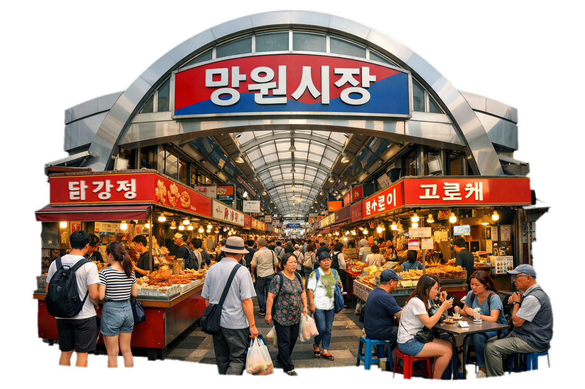
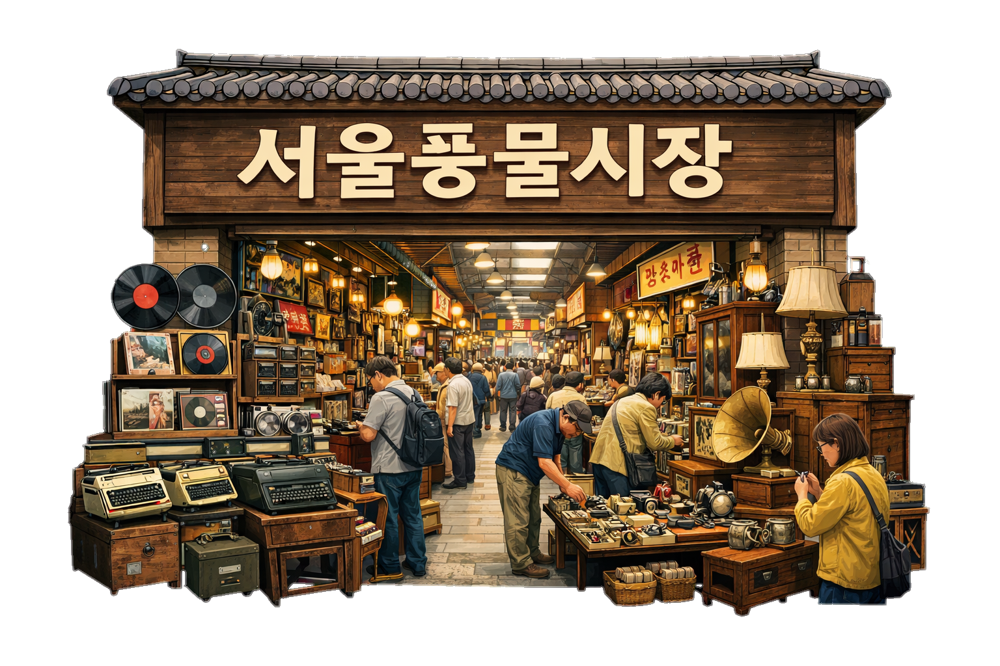
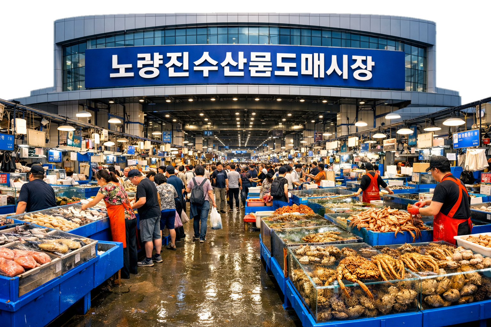
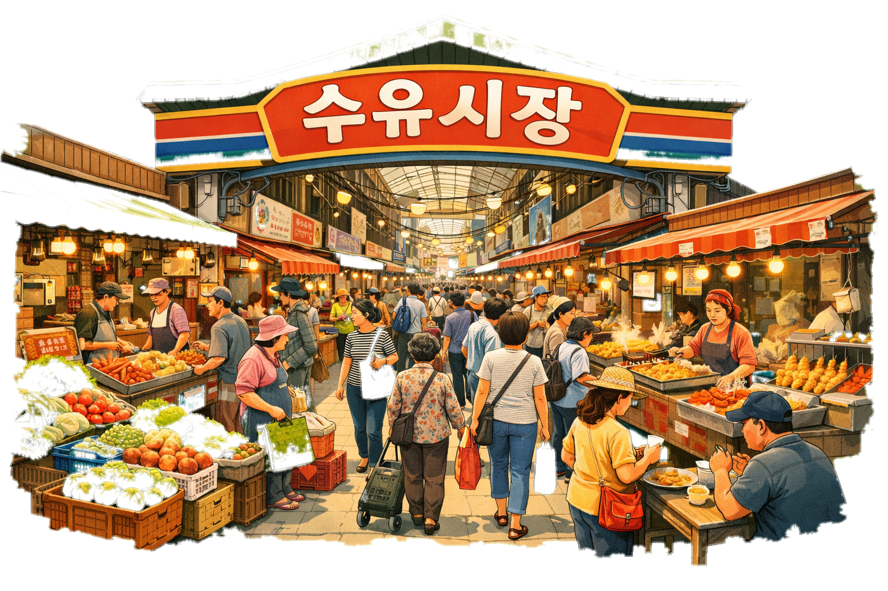
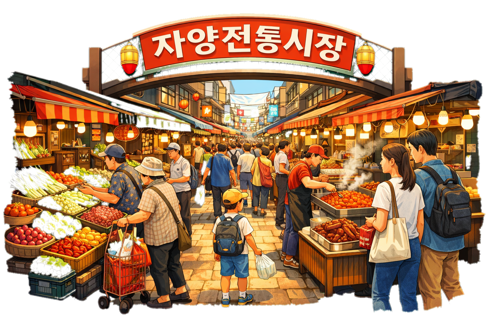

광장시장
1905년 문을 연 대한민국 최초의 상설시장으로 빈대떡, 마약김밥, 육회 등 한국 대표 길거리 음식과 한복·구제 상가가 어우러진 미식 명소입니다.
대표 먹거리
빈대떡, 마약김밥, 육회
대표 볼거리
한복 거리, 구제 시장, 야시장
수십 년 노포의 정과 맛이 숨 쉬는 서울 17대 전통시장 로컬 여행 블로그
자치구별 필터와 키워드 검색으로 원하는 시장의 먹거리, 지하철 출구, 상세 가이드를 찾아보세요.
1905년 문을 연 대한민국 최초의 상설시장으로 빈대떡, 마약김밥, 육회 등 한국 대표 길거리 음식과 한복·구제 상가가 어우러진 미식 명소입니다.
빈대떡, 마약김밥, 육회
한복 거리, 구제 시장, 야시장

숭례문 인근에 자리한 한국 최대 규모 만물시장으로 아동복, 주방용품, 액세서리부터 갈치조림·칼국수 골목까지 도소매 활기가 넘치는 곳입니다.
갈치조림, 손칼국수, 야채호떡
숭례문, 아동복 상가, 카메라 거리

트렌디한 먹거리와 전통시장의 정이 공존하는 서울 서북권 핫플레이스. 닭강정, 수제 고로케와 함께 망리단길·한강공원 피크닉 코스로 사랑받습니다.
닭강정, 수제 고로케, 칼국수
망리단길, 망원 한강공원

서촌 한옥 골목과 맞닿아 있는 정겨운 시장. 전통 엽전을 구매해 원하는 반찬을 골라 담는 '엽전 도시락 카페'와 원조 기름떡볶이가 유명합니다.
기름떡볶이, 엽전 도시락
경복궁, 서촌 한옥마을

국내 최대 한약재 시장 서울약령시와 제철 농수산물이 모이는 건강 시장이자, 폐극장을 개조한 스타벅스 경동1960점과 청년몰이 공존하는 명소입니다.
한방차, 시장 통닭, 잔치국수
서울약령시, 경동1960 극장카페

수도권 식자재를 책임지는 대한민국 최대 농수산물 도매시장. 현대화 쇼핑몰 '가락몰'에서 신선한 회와 축산물, 과일을 쾌적하게 즐길 수 있습니다.
제철 모둠회, 한우 구이
가락몰 식당가, 야간 경매

레코드판(LP), 필름 카메라, 옛 생활용품과 골동품이 모인 국내 대표 풍물시장. '청춘1번가' 레트로 테마존에서 보물찾기 같은 시간 여행을 즐겨보세요.
전통 주전부리, 푸드코트
청계천 산책길, 청춘1번가

강남 논현동 빌딩 숲 사이에 자리한 생활 밀착형 먹거리 골목. 낮에는 식자재 시장, 저녁에는 족발·전·분식 노포가 북적이는 퇴근길 명소입니다.
족발, 모둠전, 시장 분식
논현 먹자골목, 가구거리

수천 개 점포에서 원단과 의류 부자재, 5층 액세서리 DIY 재료를 취급하는 패션 허브. 인근 닭한마리 골목과 DDP까지 하루 코스로 알찹니다.
닭한마리, 생선구이 백반
5층 액세서리 상가, DDP, 청계천

황학동 유서 깊은 시장이자 최근 '힙당동' 감성의 중심지. 보리밥·수제 어묵 노포와 청년 펍, 신당동 떡볶이 타운이 공존해 세대를 아우릅니다.
보리밥, 수제 어묵, 호떡
힙당동 골목, 떡볶이 타운

빈티지 의류와 고서적, 레코드, 옛 소품들이 골목을 메운 한국 대표 노천 벼룩시장. 동묘 담벼락 산책과 가성비 토스트·국밥 먹거리가 매력적입니다.
고기튀김, 국밥, 길거리 토스트
구제 의류 골목, 동관왕묘

수도권 육류 유통의 중심지이자 한우 성지. 1층 정육점에서 고른 최상급 한우를 2층 먹자골목 식당에서 상차림비만 내고 바로 구워 먹을 수 있습니다.
한우 구이, 신선 육회
정육 골목, 청계천 산책로

100년 역사를 지닌 대한민국 최고 수산물 도매시장. 현대화된 건물 1층에서 고른 활어회와 킹크랩을 2층 초장집에서 한강·여의도 전망과 함께 즐깁니다.
모둠 활어회, 매운탕, 킹크랩
새벽 경매장, 하늘광장 전망

깔끔한 아케이드와 합리적인 먹거리 물가로 강북구 주민들의 사랑을 받는 생활 밀착형 시장. 떡볶이, 손만두, 족발 맛집이 북한산 등산객을 반깁니다.
즉석 떡볶이, 수제 만두, 족발
북한산 둘레길, 수유마을시장
서울 서남권을 대표하는 거대 전통시장. 깊은 국물의 순대국 노포 골목과 한우 정육·건어물 상권이 타임스퀘어 쇼핑몰과 어우러져 독특한 매력을 전합니다.
진한 순대국, 머릿고기
순대국 골목, 타임스퀘어

뚝섬 한강공원과 가까워 피크닉 간식을 포장하려는 나들이객들에게 인기 만점인 시장. 달콤한 닭강정, 꽈배기, 칼국수 등 가성비 간식이 가득합니다.
닭강정, 즉석 꽈배기, 칼국수
뚝섬 한강공원, 반찬 골목

암사동 선사유적지 인근의 정겨운 동네 생활 시장. 정성껏 만든 수제 반찬과 즉석 떡갈비, 닭강정으로 강동구 주민과 산책객들의 꾸준한 사랑을 받습니다.
수제 떡갈비, 닭강정, 반찬
암사동 선사유적지, 한강공원
대한민국의 수도 서울은 최첨단 빌딩 숲과 화려한 네온사인이 가득한 현대적인 도시입니다. 하지만 그 화려함 이면에는 수십 년, 길게는 백 년이 넘는 세월 동안 서민들의 삶과 애환을 함께해 온 전통시장들이 굳건히 자리 잡고 있습니다. 서울의 전통시장은 단순한 상거래의 장소를 넘어, 한국의 깊은 역사와 따뜻한 '정(情)', 그리고 역동적인 문화를 온몸으로 느낄 수 있는 살아있는 박물관과도 같습니다.
각 구마다 특색 있게 자리한 시장들은 저마다의 독특한 매력을 뽐냅니다. 종로구의 광장시장은 빈대떡과 마약김밥, 육회 등 한국의 대표적인 길거리 음식을 맛볼 수 있는 미식의 천국이며, 중구의 남대문시장은 의류, 그릇, 액세서리 등 없는 것이 없는 국내 최대 규모의 종합 시장입니다. 마포구의 망원시장은 젊은 세대(MZ세대)의 발길을 사로잡는 트렌디한 먹거리와 감성적인 분위기로 새롭게 떠오르고 있으며, 동대문구의 경동시장은 전국 최대 규모의 한약재와 농수산물이 거래되는 건강의 중심지입니다.
'서울 전통시장 가이드'는 이렇게 다채로운 매력을 지닌 서울 곳곳 17대 전통시장 정보를 한곳에 모아 제공합니다. 현지인들이 사랑하는 숨은 맛집부터 외국인 관광객을 위한 필수 쇼핑 리스트, 지하철역과 공영주차장 이용 팁까지, 전통시장을 200% 즐길 수 있는 유용한 가이드를 확인해 보세요.
상인들의 삶과 골목의 숨은 이야기를 담은 생생한 현장 기록
방문 목적과 지하철 노선에 맞춰 오늘 갈 시장을 빠르게 비교해 보세요.
| 자치구 | 시장명 | 가까운 지하철 | 핵심 먹거리 · 쇼핑 | 추천 방문 시간대 | 상세 가이드 |
|---|---|---|---|---|---|
| 종로구 | 광장시장 | 1호선 종로5가역 7·8번 | 빈대떡·마약김밥·육회·구제 | 평일 14:00~17:00 | 가이드 보기 → |
| 종로구 | 통인시장 | 3호선 경복궁역 2번 | 엽전 도시락·기름떡볶이 | 화~일 11:00~15:00 | 가이드 보기 → |
| 종로구 | 동대문종합시장 | 1·4호선 동대문역 8·9번 | 원단·5층 액세서리·닭한마리 | 평일 10:00~17:00 | 가이드 보기 → |
| 종로구 | 동묘 벼룩시장 | 1·6호선 동묘앞역 3번 | 구제 빈티지·LP·고기튀김 | 주말 13:00~17:00 | 가이드 보기 → |
| 중구 | 남대문시장 | 4호선 회현역 5번 | 갈치조림·손칼국수·아동복 | 평일·토 10:00~16:00 | 가이드 보기 → |
| 중구 | 서울중앙시장 | 2·6호선 신당역 1·2번 | 보리밥·수제어묵·야시장 펍 | 오후~밤 16:00~21:00 | 가이드 보기 → |
| 마포구 | 망원시장 | 6호선 망원역 2번 | 닭강정·고로케·한강 피크닉 | 매일 11:00~19:00 | 가이드 보기 → |
| 동대문구 | 경동시장 | 1호선 제기동역 2번 | 한약재·청년몰·경동1960 카페 | 월~토 10:00~17:00 | 가이드 보기 → |
| 동대문구 | 서울풍물시장 | 1·2호선 신설동역 9번 | 골동품·레코드·청춘1번가 | 수~일 11:00~18:00 | 가이드 보기 → |
| 성동구 | 마장 축산물시장 | 5호선 마장역 2번 | 한우 직판·정육식당·육회 | 오후~저녁 12:00~21:00 | 가이드 보기 → |
| 동작구 | 노량진수산시장 | 1·9호선 노량진역 7·9번 | 모둠 활어회·킹크랩·매운탕 | 새벽 경매 / 저녁 식사 | 가이드 보기 → |
| 송파구 | 가락시장 | 3·8호선 가락시장역 2번 | 가락몰 수산·청과·축산 | 매일 10:00~20:00 | 가이드 보기 → |
| 강남구 | 영동전통시장 | 9호선 신논현역 3번 | 족발·모둠전·퇴근길 골목 | 저녁 17:00~22:00 | 가이드 보기 → |
| 영등포구 | 영등포전통시장 | 5호선 영등포시장역 3·4번 | 순대국 골목·한우·청과 | 점심~저녁 11:00~20:00 | 가이드 보기 → |
| 강북구 | 수유시장 | 4호선 수유역·미아역 | 만두·떡볶이·족발·등산 간식 | 매일 11:00~20:00 | 가이드 보기 → |
| 광진구 | 자양전통시장 | 2호선 구의역 4번 | 꽈배기·닭강정·한강 피크닉 | 매일 12:00~20:00 | 가이드 보기 → |
| 강동구 | 암사종합시장 | 8호선 암사역 1·4번 | 수제 반찬·떡갈비·닭강정 | 매일 10:00~19:30 | 가이드 보기 → |
각 시장의 역사, 추천 도보 동선, 영업시간과 자주 묻는 질문(FAQ)까지 상세 아티클로 확인하세요.
처음 방문하는 여행자도 현지인처럼 알뜰하고 편하게 즐기는 실전 노하우
대부분 상점에서 카드와 간편결제가 가능하지만, 디지털 온누리상품권 앱을 활용하면 상시 충전 할인과 전통시장 소득공제 40% 혜택을 동시에 챙길 수 있습니다. 간이 노점 일부를 위해 1~2만 원 소액 현금을 함께 준비하면 편리합니다.
도소매와 생필품 점포는 오전 10시~오후 6시, 먹거리 골목과 야시장은 오후 4시~8시가 가장 활기찹니다. 남대문·동대문·경동시장처럼 일요일에 쉬는 상가와 통인·풍물시장처럼 주중 특정 요일 휴무가 있으므로 방문 전 가이드를 확인하세요.
서울 주요 전통시장은 모두 지하철역 출구에서 도보 1~5분 거리에 있어 대중교통 이용이 가장 빠릅니다. 자차 방문 시에는 가락몰·노량진 대형 주차장이나 시장 공영주차장을 이용하고 점포 구매 할인권을 요청하세요.